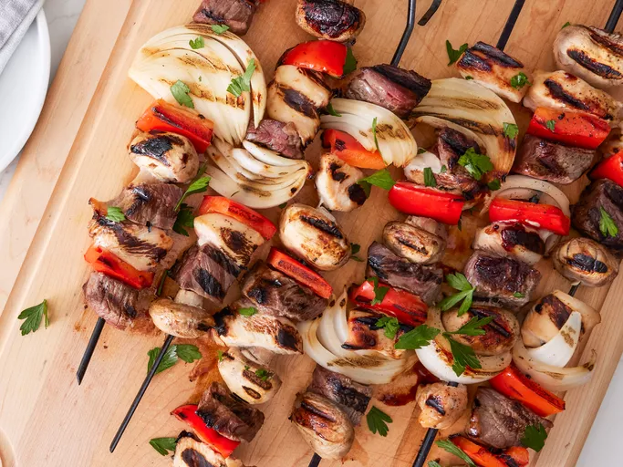

Home
Kabobs

These grilled kabobs made with steak and chicken stay moist and flavorful. The pieces of meat and vegetables are
marinated in a honey teriyaki sauce, then skewered and grilled until tender and delicious.
Ingredients
- ½ cup teriyaki sauce
- ½ cup honey
- ½ teaspoon garlic powder
- ½ pinch ground ginger
- 1 ½ pounds skinless, boneless chicken breast halves - cut into cubes
- 1 pound beef sirloin, cut into 1-inch cubes
- 2 red bell peppers, cut into 2-inch pieces
- 1 large sweet onion, peeled and cut into wedges
- 1 ½ cups whole fresh mushrooms
- skewers
Steps
- Gather all ingredients.
- Mix teriyaki sauce, honey, garlic powder, and ginger in a large resealable plastic bag. Place chicken, beef, red bell peppers, onion wedges, and mushrooms in the bag; coat with marinade, squeeze out excess air, and seal the bag. Refrigerate for 4 hours to overnight.
- Preheat the grill to medium-high heat. Lightly oil the grill grate. Thread meat and vegetables onto skewers, leaving a small space between each item. Discard any remaining marinade.
- Grill skewers, turning as needed, until meat is cooked through and vegetables are tender, about 10 minutes.